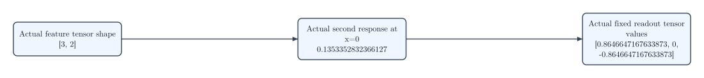
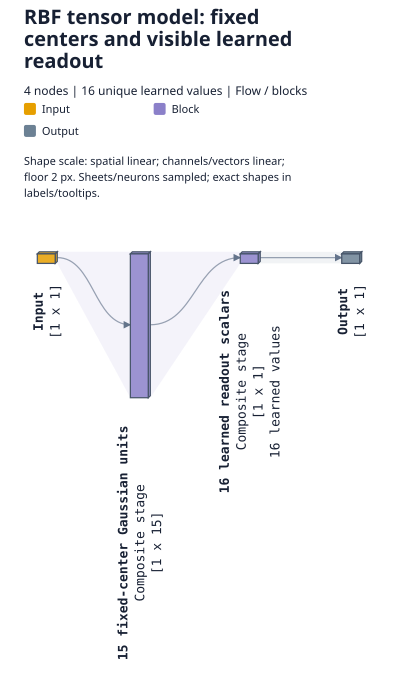
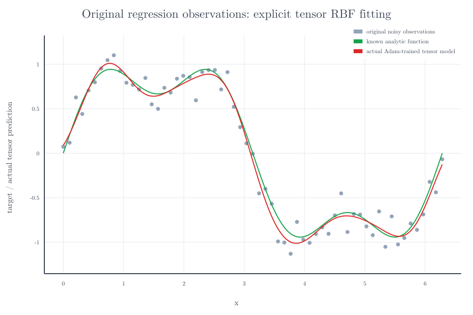
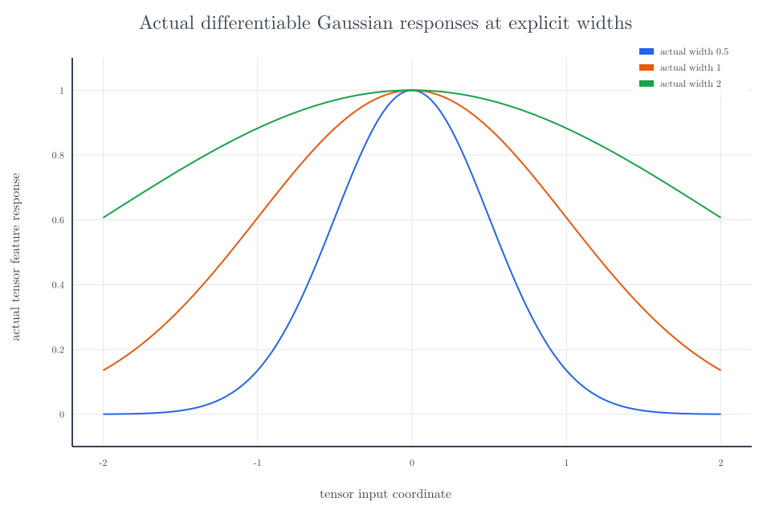
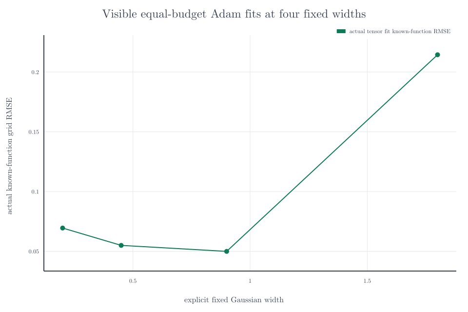

RBF neural regression: differentiable Gaussian units and explicit tensor optimization
Abstract
A radial-basis network approximates a scalar function with localized Gaussian responses and a learned linear readout. Native tensor features now make every model prediction, objective and optimizer update explicit. The original 61 noisy sine-mixture observations,15 units and 201-point noiseless evaluation grid remain. The original data-driven-center closed-form model is retained as a separate comparison, while the demonstrated neural model fixes an explicit center grid and visibly trains its weights and bias.
Mechanism and mathematical scope
For input x and fixed centers c_k, the native tensor feature path computes
The report learns the 15 weights and one bias with actual Float64 tensor Adam updates. Centers and width are explicit fixed controls; gradients to centers are nevertheless supported by the reusable tensor feature API and checked independently. The objective is
With fixed features this is a convex quadratic in the readout. Its normal-equation solution provides an independent comparison, not a replacement for the visible optimizer loop. The original native model instead places centers by fixed Lloyd passes and chooses a spread width; that different basis is labelled separately. For the shown tensor model, one feature pass costs O(n*K*d) and each readout/gradient update O(n*K), with 16 learnable scalars.
A tiny actual producing history
The table and native concept diagram read the same producing execution. Every block below is a complete editable C++ program.
#include <dm/dm.hpp>
int main() {
namespace a = dm::algorithms;
namespace g = dm::graphics;
std::filesystem::create_directories("build");
namespace n = dm::nn;
n::set_num_threads(2);
auto input = n::from_vector(std::vector<double>{0, 1, 2}, {3, 1});
auto centers = n::from_vector(std::vector<double>{0, 2}, {2, 1});
auto phi = n::rbf_features(input, centers, 1);
auto weights = n::from_vector(std::vector<double>{1, -1}, {2, 1});
auto output = n::matmul(phi, weights);
std::print(
"\n| actual tensor input | actual first Gaussian | actual second Gaussian | actual fixed "
"readout |\n| ---: | ---: | ---: | ---: |\n");
for (int i = 0; i < 3; ++i)
std::print(
"| {} | {} | {} | {} |\n",
input.at({i, 0}),
phi.at({i, 0}),
phi.at({i, 1}),
output.at({i, 0}));
g::Diagram d;
d.node("n0", {0, 0}, std::format("Actual feature tensor shape\n{}", phi.shape()));
d.node("n1", {10, 0}, std::format("Actual second response at x=0\n{}", phi.at({0, 1})));
d.node(
"n2",
{20, 0},
std::format("Actual fixed readout tensor values\n{}", output.to_vector<double>()));
d.edge("n0", "n1").edge("n1", "n2");
d.save_svg("build/rbf_network_tiny.svg");
}| actual tensor input | actual first Gaussian | actual second Gaussian | actual fixed readout |
|---|---|---|---|
| 0 | 1 | 0.1353352832366127 | 0.8646647167633873 |
| 1 | 0.6065306597126334 | 0.6065306597126334 | 0 |
| 2 | 0.1353352832366127 | 1 | -0.8646647167633873 |

Explicit differentiable architecture
#include <dm/dm.hpp>
int main() {
namespace a = dm::algorithms;
namespace g = dm::graphics;
std::filesystem::create_directories("build");
namespace n = dm::nn;
n::set_num_threads(2);
const auto centers = n::linspace(0, 2 * std::numbers::pi, 15, n::DType::Float64).reshape({15, 1});
auto weights = n::zeros({15, 1}, n::DType::Float64).requires_grad_();
auto bias = n::zeros({1}, n::DType::Float64).requires_grad_();
n::Module model(
[&](const n::Tensor& input) {
auto phi = n::rbf_features(input, centers, .45);
n::model_stage("15 fixed-center Gaussian units", input, phi);
auto output = n::matmul(phi, weights) + bias;
n::model_stage("16 learned readout scalars", phi, output);
return output;
},
"RBF tensor model: fixed centers and visible learned readout");
n::ModelPlotOptions options;
options.style = n::ModelPlotStyle::Flow;
options.detail = n::ModelPlotDetail::Blocks;
auto diagram = model.plot(n::zeros({1, 1}, n::DType::Float64), options);
diagram.save_svg("build/rbf_network_architecture.svg");
std::print(
"\n| actual model quantity | count |\n| --- | ---: |\n| Gaussian units | {} |\n| explicit "
"learnable readout scalars | {} |\n| reachable diagram parameters | {} |\n",
centers.size(0),
weights.numel() + bias.numel(),
diagram.parameter_count());
}| actual model quantity | count |
|---|---|
| Gaussian units | 15 |
| explicit learnable readout scalars | 16 |
| reachable diagram parameters | 16 |

The retained original experiment
#include <dm/dm.hpp>
int main() {
namespace a = dm::algorithms;
namespace g = dm::graphics;
std::filesystem::create_directories("build");
namespace n = dm::nn;
n::set_num_threads(2);
const auto data = a::rbf_example_data();
std::vector<double> flat;
for (const auto& row : data.input)
flat.push_back(row[0]);
const auto input = n::from_vector(flat, {61, 1}), target = n::from_vector(data.target, {61, 1});
const auto centers = n::linspace(0, 2 * std::numbers::pi, 15, n::DType::Float64).reshape({15, 1});
const double width = .45, ridge = 1e-4;
const auto phi = n::rbf_features(input, centers, width);
auto weights = n::zeros({15, 1}, n::DType::Float64).requires_grad_();
auto bias = n::zeros({1}, n::DType::Float64).requires_grad_();
n::OptimizerConfig config;
config.kind = n::OptimizerKind::Adam;
n::Optimizer adam(std::vector<n::Tensor>{weights, bias}, .03, config);
std::print(
"\n| actual completed Adam updates | actual tensor objective | actual tensor training MSE "
"|\n| ---: | ---: | ---: |\n");
for (int step = 0; step <= 2000; ++step) {
auto prediction = n::matmul(phi, weights) + bias;
auto mse = n::mean(n::square(prediction - target));
auto objective = mse + (ridge / 61.) * (n::sum(n::square(weights)) + n::sum(n::square(bias)));
if (step % 200 == 0)
std::print("| {} | {} | {} |\n", step, objective.item(), mse.item());
if (step < 2000)
adam.minimize(objective);
}
const auto grid = n::from_vector(data.grid, {201, 1}),
truth = n::from_vector(data.truth, {201, 1});
const auto fitted = n::matmul(n::rbf_features(grid, centers, width), weights) + bias;
const double rmse = n::sqrt(n::mean(n::square(fitted - truth))).item();
std::vector<std::vector<double>> fixed_centers;
for (double x : centers.to_vector<double>())
fixed_centers.push_back({x});
const auto reference = a::rbf_fit_output(data.input, data.target, fixed_centers, width, ridge);
const auto ref_weights = n::from_vector(reference.weights, {15, 1});
const auto reference_predictions = n::matmul(phi, ref_weights) + reference.bias;
const auto actual_predictions = n::matmul(phi, weights) + bias;
const double disagreement =
n::sqrt(n::mean(n::square(actual_predictions - reference_predictions))).item();
const auto retained = a::rbf_train_run(data.input, data.target, 15, 1e-4, 0, 40, 1);
std::print(
"Actual tensor updates {}, Float64 learned scalars {}, known-function grid RMSE {}, "
"training-prediction RMS gap to fixed-basis closed-form comparison {}.\n",
adam.iterations(),
weights.numel() + bias.numel(),
rmse,
disagreement);
std::print(
"Separate retained original Lloyd/closed-form comparison: width {}, prediction at the same "
"grid point near pi/2 {}. Tensor prediction there {}; analytic target {}.\n",
retained.model.width,
a::rbf_predict(retained.model, {data.grid[50]}),
fitted.at({50, 0}),
truth.at({50, 0}));
auto p = g::RPlot::create();
p.points(
input.to_vector<double>(),
target.to_vector<double>(),
"original noisy observations",
{148, 163, 184},
4)
.lines(
grid.to_vector<double>(),
truth.to_vector<double>(),
"known analytic function",
{22, 163, 74})
.lines(
grid.to_vector<double>(),
fitted.to_vector<double>(),
"actual Adam-trained tensor model",
{220, 38, 38})
.title("Original regression observations: explicit tensor RBF fitting")
.x_label("x")
.y_label("target / actual tensor prediction");
p.save_svg("build/rbf_network_original.svg");
}| actual completed Adam updates | actual tensor objective | actual tensor training MSE |
|---|---|---|
| 0 | 0.5831613672750927 | 0.5831613672750927 |
| 200 | 0.013911111692407198 | 0.01390673400892568 |
| 400 | 0.013595046453684367 | 0.013590141557430928 |
| 600 | 0.013473425694886928 | 0.013468094090457659 |
| 800 | 0.013416406306005896 | 0.013410764570499997 |
| 1000 | 0.013374832643303818 | 0.013368938422987985 |
| 1200 | 0.013337946832205773 | 0.013331785345767393 |
| 1400 | 0.013304387761156125 | 0.013297906364048826 |
| 1600 | 0.013274446585888606 | 0.013267581848885043 |
| 1800 | 0.01324932563417362 | 0.01324201869396035 |
| 2000 | 0.01322688772718551 | 0.0132190956958914 |
Actual tensor updates 2000, Float64 learned scalars 16, known-function grid RMSE 0.05494931964110818, training-prediction RMS gap to fixed-basis closed-form comparison 0.009813504333504178. Separate retained original Lloyd/closed-form comparison: width 1.051551821750004, prediction at the same grid point near pi/2 0.6496641854320443. Tensor prediction there 0.6469836970194419; analytic target 0.6666666666666667.

Explicit controls
#include <dm/dm.hpp>
int main() {
namespace a = dm::algorithms;
namespace g = dm::graphics;
std::filesystem::create_directories("build");
namespace n = dm::nn;
n::set_num_threads(2);
const auto input = n::from_vector(std::vector<double>{-2, -1, 0, 1, 2}, {5, 1});
const auto center = n::zeros({1, 1}, n::DType::Float64);
const auto curve_grid=n::linspace(-2,2,201,n::DType::Float64).reshape({201,1});
auto p = g::RPlot::create();
std::print("\n| explicit width | actual Gaussian tensor values |\n| ---: | --- |\n");
for (double width : {.5, 1., 2.}) {
auto phi = n::rbf_features(input, center, width);
std::print("| {} | `{}` |\n", width, phi.to_vector<double>());
p.lines(
curve_grid.to_vector<double>(),
n::rbf_features(curve_grid, center, width).to_vector<double>(),
std::format("actual width {}", width),
width == .5 ? g::RGB{37, 99, 235}
: width == 1 ? g::RGB{234, 88, 12}
: g::RGB{22, 163, 74});
}
auto x = n::from_vector(std::vector<double>{.25}, {1, 1}).requires_grad_();
auto c = n::zeros({1, 1}, n::DType::Float64).requires_grad_();
auto gradient = n::grad(n::sum(n::rbf_features(x, c, 1)), std::vector<n::Tensor>{x, c});
bool invalid = false;
try {
n::rbf_features(input, center, 0);
} catch (const std::invalid_argument&) {
invalid = true;
}
std::print(
"Actual input gradient {}, center gradient {}; invalid zero width rejected {}.\n",
gradient[0].item(),
gradient[1].item(),
invalid);
p.title("Actual differentiable Gaussian responses at explicit widths")
.x_label("tensor input coordinate")
.y_label("actual tensor feature response");
p.save_svg("build/rbf_network_controls.svg");
if (!invalid)
return 1;
}| explicit width | actual Gaussian tensor values |
|---|---|
| 0.5 | [0.00033546262790251185, 0.1353352832366127, 1, 0.1353352832366127, 0.00033546262790251185] |
| 1 | [0.1353352832366127, 0.6065306597126334, 1, 0.6065306597126334, 0.1353352832366127] |
| 2 | [0.6065306597126334, 0.8824969025845955, 1, 0.8824969025845955, 0.6065306597126334] |
Actual input gradient -0.24230830861908603, center gradient 0.24230830861908603; invalid zero width rejected true.

Actual selected work and sensitivity
#include <dm/dm.hpp>
int main() {
namespace a = dm::algorithms;
namespace g = dm::graphics;
std::filesystem::create_directories("build");
namespace n = dm::nn;
n::set_num_threads(2);
const auto data = a::rbf_example_data();
std::vector<double> flat;
for (const auto& row : data.input)
flat.push_back(row[0]);
const auto input = n::from_vector(flat, {61, 1}), target = n::from_vector(data.target, {61, 1}),
grid = n::from_vector(data.grid, {201, 1}),
truth = n::from_vector(data.truth, {201, 1});
const auto centers = n::linspace(0, 2 * std::numbers::pi, 15, n::DType::Float64).reshape({15, 1});
std::vector<double> x, y;
std::print(
"\n| explicit fixed width | actual Adam updates | actual tensor training MSE | "
"known-function grid RMSE |\n| ---: | ---: | ---: | ---: |\n");
for (double width : {.2, .45, .9, 1.8}) {
const auto phi = n::rbf_features(input, centers, width);
auto weights = n::zeros({15, 1}, n::DType::Float64).requires_grad_();
auto bias = n::zeros({1}, n::DType::Float64).requires_grad_();
n::OptimizerConfig config;
config.kind = n::OptimizerKind::Adam;
n::Optimizer adam(std::vector<n::Tensor>{weights, bias}, .03, config);
for (int step = 0; step < 2000; ++step) {
auto prediction = n::matmul(phi, weights) + bias;
auto objective = n::mean(n::square(prediction - target)) +
(1e-4 / 61.) * (n::sum(n::square(weights)) + n::sum(n::square(bias)));
adam.minimize(objective);
}
const double mse = n::mean(n::square(n::matmul(phi, weights) + bias - target)).item();
auto prediction = n::matmul(n::rbf_features(grid, centers, width), weights) + bias;
const double error = n::sqrt(n::mean(n::square(prediction - truth))).item();
x.push_back(width);
y.push_back(error);
std::print("| {} | {} | {} | {} |\n", width, adam.iterations(), mse, error);
}
auto p = g::RPlot::create();
p.lines(x, y, "actual tensor fit known-function RMSE", {16, 122, 87})
.points(x, y, {16, 122, 87}, 5)
.title("Visible equal-budget Adam fits at four fixed widths")
.x_label("explicit fixed Gaussian width")
.y_label("actual known-function grid RMSE");
p.save_svg("build/rbf_network_work.svg");
}| explicit fixed width | actual Adam updates | actual tensor training MSE | known-function grid RMSE |
|---|---|---|---|
| 0.2 | 2000 | 0.014423120461586903 | 0.06946591539380494 |
| 0.45 | 2000 | 0.0132190956958914 | 0.05494931964110818 |
| 0.9 | 2000 | 0.014060881317779984 | 0.04993300567740132 |
| 1.8 | 2000 | 0.06425680545510527 | 0.2144361013290445 |

API and interpretation
Every demonstrated neural feature, prediction, objective, gradient, update and metric uses dm::nn tensors. Native input generation preserves the original noisy observations and analytic grid; host containers only import/export those observations, plotting values or the separately labelled closed-form comparisons. The primary network uses an explicit fixed 15-center grid and width 0.45; its 16 learned readout scalars and Adam(.03), 2000-update loop are visible. The original native 15-center Lloyd 40-pass/automatic-width model remains a separate different-basis comparison. A same-fixed-basis closed-form readout is an independent reference, not a hidden fitter. Finite Adam updates need not match its coefficients exactly. The 201-point known-function grid is a synthetic analytic error study, not held-out noisy observations; the four-width sweep is descriptive sensitivity, not selected held-out model performance. The checked tensor feature helper currently supports CPU Float32/Float64 and bounds broadcast intermediates.
Reusable producers, fixtures and histories live in the canonical C++ library. Captured records own their values and do not come from a separate report replay. Selected counters and record/scalar policies are specified at their API boundaries; they are not peak-byte or wall-time budgets. Synthetic structural inputs are controlled fixtures for these mechanisms.
References
- Broomhead and Lowe, Multivariable Functional Interpolation and Adaptive Networks (1988)
- Kingma and Ba, Adam: A Method for Stochastic Optimization
Verification: 214 scoped native cases;15 directly instrumented ASan/UBSan cases;127 executable public examples;567/567 full-file definitions;10 hovers;1340 independent records/58514 checks;frozen compatibility across six changed legacy families;independent NumPy tensor-training comparisons with recorded tolerances;12 checkout/installed standalone headers and linked consumer;41 executed programs and41 inspected figures with both exports. Receipts: build/mepml-conversion/batch-314-323/.
The independent NumPy check matches the primary model final grid RMSE and fixed-basis prediction gap within1e-7. Float64 reduction ordering affects late finite-budget Adam iterates; the width-sweep RMSE comparison uses an explicit5e-4 absolute tolerance. The receipt retains the actual comparison values and tolerances.